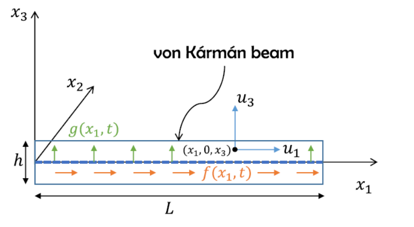
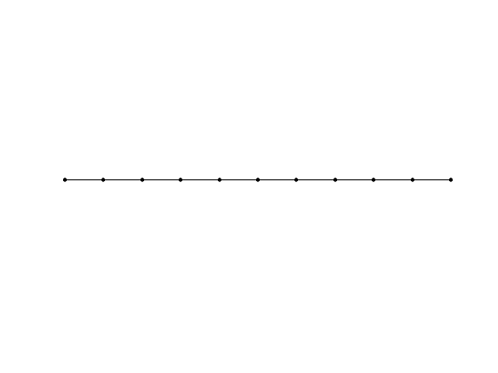
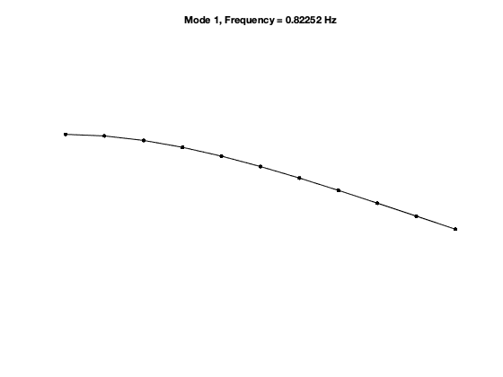
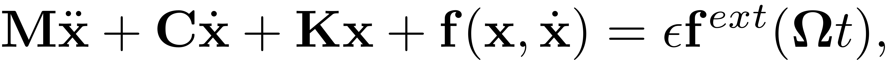
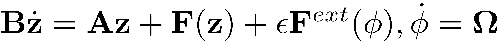
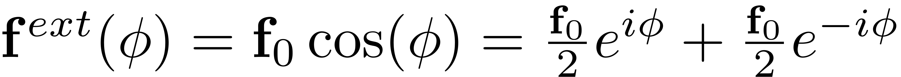

Geometrically nonlinear von Karman beam
Contents
References
Finite element model from the following reference:
Jain, S., Tiso, P., & Haller, G. (2018). Exact nonlinear model reduction for a von Kármán beam: slow-fast decomposition and spectral submanifolds. Journal of Sound and Vibration, 423, 195–211. ;https://doi.org/10.1016/J.JSV.2018.01.049;
Finite element code taken from the following package:
Jain, S., Marconi, J., Tiso P. (2020). YetAnotherFEcode (Version v1.1). Zenodo. ;http://doi.org/10.5281/zenodo.4011282;
system parameters
clear all, close all nElements = 10; epsilon = 5e-4;
generate model
[M,C,K,fnl,f_0,outdof] = build_model(nElements); n = length(M); disp(['Number of degrees of freedom = ' num2str(n)]) disp(['Phase space dimensionality = ' num2str(2*n)])
Building FE model Assembling M,C,K matrices Applying boundary conditions Solving undamped eigenvalue problem Assembling external force vector Getting nonlinearity coefficients Loaded tensors from storage Total time spent on model assembly = 00:00:01 Number of degrees of freedom = 30 Phase space dimensionality = 60 
Dynamical system setup
We consider the forced system

which can be written in the first-order form as

where
![$\mathbf{z}=\left[\begin{array}{c}\mathbf{x}\\\dot{\mathbf{x}}\end{array}\right],\quad\mathbf{A}=\left[\begin{array}{cc}-\mathbf{K} & \mathbf{0}\\\mathbf{0} & \mathbf{M}\end{array}\right],\mathbf{B}=\left[\begin{array}{cc}\mathbf{C} & \mathbf{M}\\\mathbf{M} & \mathbf{0}\end{array}\right],\quad\quad\mathbf{F}(\mathbf{z})=\left[\begin{array}{c}\mathbf{-\mathbf{f}(\mathbf{x},\dot{\mathbf{x}})}\\\mathbf{0}\end{array}\right],\quad\mathbf{F}^{ext}(\mathbf{z},\mathbf{\phi})=\left[\begin{array}{c}\mathbf{f}^{ext}(\mathbf{\phi})\\\mathbf{0}\end{array}\right]$](vonKarmanBeamDoc_eq06277547758420750616-Rescaled.png) .
.
DS = DynamicalSystem(); set(DS,'M',M,'C',C,'K',K,'fnl',fnl); set(DS.Options,'Emax',5,'Nmax',10,'notation','multiindex') % set(DS.Options,'Emax',5,'Nmax',10,'notation','tensor')
We assume periodic forcing of the form

Fourier coefficients of Forcing
kappas = [-1; 1]; coeffs = [f_0 f_0]/2; DS.add_forcing(coeffs, kappas,epsilon);
Linear Modal analysis and SSM setup
[V,D,W] = DS.linear_spectral_analysis();
Due to high-dimensionality, we compute only the first 5 eigenvalues with the smallest magnitude. These would also be used to compute the spectral quotients Assuming a proportional damping hypthesis with symmetric matrices modal damping ratio for 1 mode is 3.691472e-04 modal damping ratio for 2 mode is 2.313481e-03 modal damping ratio for 3 mode is 6.479248e-03 modal damping ratio for 4 mode is 1.270560e-02 modal damping ratio for 5 mode is 2.103617e-02 The first 10 nonzero eigenvalues are given as 1.0e+02 * -0.0000 + 0.0517i -0.0000 - 0.0517i -0.0007 + 0.3239i -0.0007 - 0.3239i -0.0059 + 0.9071i -0.0059 - 0.9071i -0.0226 + 1.7786i -0.0226 - 1.7786i -0.0620 + 2.9444i -0.0620 - 2.9444i
Choose Master subspace (perform resonance analysis)
S = SSM(DS); set(S.Options, 'reltol', 0.1,'notation','multiindex') masterModes = [1,2]; S.choose_E(masterModes);
The master subspace contains the following eigenvalues lambda1 == - 0.0019078 + 5.1681i lambda2 == (-0.0019078) - 5.1681i No (near) outer resonances detected in the (truncated) spectrum sigma_out = 3247 (near) inner resonance detected for the following combination of master eigenvalues: 2*lambda1 + 1*lambda2 == lambda1 3*lambda1 + 2*lambda2 == lambda1 4*lambda1 + 3*lambda2 == lambda1 5*lambda1 + 4*lambda2 == lambda1 1*lambda1 + 2*lambda2 == lambda2 2*lambda1 + 3*lambda2 == lambda2 3*lambda1 + 4*lambda2 == lambda2 4*lambda1 + 5*lambda2 == lambda2 sigma_in = 3247
Forced response curves using SSMs
Obtaining forced response curve in reduced-polar coordinate
order = [3,5,7]; % Approximation order
setup options
set(S.Options, 'reltol', 1,'IRtol',0.02,'notation', 'multiindex','contribNonAuto',true) set(S.FRCOptions, 'nt', 2^7, 'nRho', 200, 'nPar', 200, 'nPsi', 100, 'rhoScale', 2 ) set(S.FRCOptions, 'method','continuation ep', 'z0', 1e-4*[1; 1]) % 'level set' set(S.FRCOptions, 'outdof',outdof)
choose frequency range around the first natural frequency
omega0 = imag(S.E.spectrum(1)); omegaRange = omega0*[0.9 1.1];
extract forced response curve
FRC = S.extract_FRC('freq',omegaRange,order); figFRC = gcf;
Computation of FRCs at order 3
*****************************************
Calculating FRC using SSM with master subspace: [1 2]
The master subspace contains the following eigenvalues
lambda1 == - 0.0019078 + 5.1681i
lambda2 == (-0.0019078) - 5.1681i
(near) outer resonance detected for the following combinations of master eigenvalues
They are in resonance with the following eigenvalues of the slave subspace
6*lambda1 + 0*lambda2 == - 0.0749307 + 32.3886i
7*lambda1 + 0*lambda2 == - 0.0749307 + 32.3886i
7*lambda1 + 1*lambda2 == - 0.0749307 + 32.3886i
8*lambda1 + 1*lambda2 == - 0.0749307 + 32.3886i
8*lambda1 + 2*lambda2 == - 0.0749307 + 32.3886i
0*lambda1 + 6*lambda2 == (-0.0749307) - 32.3886i
0*lambda1 + 7*lambda2 == (-0.0749307) - 32.3886i
1*lambda1 + 7*lambda2 == (-0.0749307) - 32.3886i
1*lambda1 + 8*lambda2 == (-0.0749307) - 32.3886i
2*lambda1 + 8*lambda2 == (-0.0749307) - 32.3886i
sigma_out = 3247
(near) inner resonance detected for the following combination of master eigenvalues:
2*lambda1 + 1*lambda2 == lambda1
3*lambda1 + 2*lambda2 == lambda1
4*lambda1 + 3*lambda2 == lambda1
5*lambda1 + 4*lambda2 == lambda1
1*lambda1 + 2*lambda2 == lambda2
2*lambda1 + 3*lambda2 == lambda2
3*lambda1 + 4*lambda2 == lambda2
4*lambda1 + 5*lambda2 == lambda2
sigma_in = 3247
Due to (near) outer resonance, the exisitence of the manifold is questionable and the underlying computation may suffer.
Attempting manifold computation
Manifold computation time at order 2 = 00:00:00
Estimated memory usage at order 2 = 6.15E-02 MB
Manifold computation time at order 3 = 00:00:00
Estimated memory usage at order 3 = 8.63E-02 MB
Run='freqSubint1.ep': Continue equilibria along primary branch.
STEP DAMPING NORMS COMPUTATION TIMES
IT SIT GAMMA ||d|| ||f|| ||U|| F(x) DF(x) SOLVE
0 3.73e-03 8.32e+00 0.0 0.0 0.0
1 1 1.00e+00 6.04e-03 2.38e-07 8.32e+00 0.0 0.0 0.0
2 1 1.00e+00 4.55e-06 9.98e-12 8.32e+00 0.0 0.0 0.0
3 1 1.00e+00 1.95e-10 2.44e-16 8.32e+00 0.0 0.0 0.0
STEP TIME ||U|| LABEL TYPE om rho1 th1 eps
0 00:00:00 8.3246e+00 1 EP 5.1723e+00 5.1935e-04 2.8101e+00 5.0000e-04
10 00:00:01 8.4394e+00 2 5.0920e+00 1.4760e-04 3.1117e+00 5.0000e-04
20 00:00:01 7.9579e+00 3 4.6710e+00 2.3186e-05 3.1377e+00 5.0000e-04
21 00:00:01 7.9348e+00 4 EP 4.6513e+00 2.2299e-05 3.1379e+00 5.0000e-04
STEP TIME ||U|| LABEL TYPE om rho1 th1 eps
0 00:00:01 8.3246e+00 5 EP 5.1723e+00 5.1935e-04 2.8101e+00 5.0000e-04
7 00:00:02 7.6003e+00 6 FP 5.2300e+00 7.8126e-04 1.2366e+00 5.0000e-04
7 00:00:02 7.6002e+00 7 SN 5.2300e+00 7.8123e-04 1.2364e+00 5.0000e-04
10 00:00:02 7.3743e+00 8 FP 5.2114e+00 4.0279e-04 1.7928e-01 5.0000e-04
10 00:00:02 7.3744e+00 9 SN 5.2114e+00 4.0213e-04 1.7870e-01 5.0000e-04
10 00:00:02 7.3734e+00 10 5.2118e+00 3.6212e-04 1.4161e-01 5.0000e-04
20 00:00:02 7.4368e+00 11 5.2586e+00 1.2956e-04 2.5167e-02 5.0000e-04
29 00:00:03 8.0396e+00 12 EP 5.6849e+00 2.2303e-05 3.7108e-03 5.0000e-04
Computation of FRCs at order 5
*****************************************
Calculating FRC using SSM with master subspace: [1 2]
Due to (near) outer resonance, the exisitence of the manifold is questionable and the underlying computation may suffer.
Attempting manifold computation
Manifold computation time at order 2 = 00:00:00
Estimated memory usage at order 2 = 6.24E-02 MB
Manifold computation time at order 3 = 00:00:00
Estimated memory usage at order 3 = 8.72E-02 MB
Manifold computation time at order 4 = 00:00:00
Estimated memory usage at order 4 = 1.10E-01 MB
Manifold computation time at order 5 = 00:00:00
Estimated memory usage at order 5 = 1.55E-01 MB
Run='freqSubint1.ep': Continue equilibria along primary branch.
STEP DAMPING NORMS COMPUTATION TIMES
IT SIT GAMMA ||d|| ||f|| ||U|| F(x) DF(x) SOLVE
0 1.93e-05 8.32e+00 0.0 0.0 0.0
1 1 1.00e+00 2.18e-05 6.51e-12 8.32e+00 0.0 0.0 0.0
2 1 1.00e+00 2.69e-10 2.64e-16 8.32e+00 0.0 0.0 0.0
STEP TIME ||U|| LABEL TYPE om rho1 th1 eps
0 00:00:00 8.3232e+00 1 EP 5.1723e+00 5.2237e-04 2.8080e+00 5.0000e-04
10 00:00:00 8.4395e+00 2 5.0922e+00 1.4786e-04 3.1116e+00 5.0000e-04
20 00:00:00 7.9626e+00 3 4.6751e+00 2.3375e-05 3.1377e+00 5.0000e-04
21 00:00:00 7.9348e+00 4 EP 4.6513e+00 2.2299e-05 3.1379e+00 5.0000e-04
STEP TIME ||U|| LABEL TYPE om rho1 th1 eps
0 00:00:00 8.3232e+00 5 EP 5.1723e+00 5.2237e-04 2.8080e+00 5.0000e-04
7 00:00:01 7.5945e+00 6 FP 5.2288e+00 7.8634e-04 1.2242e+00 5.0000e-04
7 00:00:01 7.5945e+00 7 SN 5.2287e+00 7.8617e-04 1.2240e+00 5.0000e-04
10 00:00:01 7.3742e+00 8 FP 5.2112e+00 4.0513e-04 1.8088e-01 5.0000e-04
10 00:00:01 7.3743e+00 9 SN 5.2112e+00 4.0493e-04 1.8078e-01 5.0000e-04
10 00:00:01 7.3732e+00 10 5.2118e+00 3.6004e-04 1.3943e-01 5.0000e-04
20 00:00:02 7.4366e+00 11 5.2584e+00 1.2980e-04 2.5225e-02 5.0000e-04
29 00:00:02 8.0396e+00 12 EP 5.6849e+00 2.2303e-05 3.7108e-03 5.0000e-04
Computation of FRCs at order 7
*****************************************
Calculating FRC using SSM with master subspace: [1 2]
Due to (near) outer resonance, the exisitence of the manifold is questionable and the underlying computation may suffer.
Attempting manifold computation
Manifold computation time at order 2 = 00:00:00
Estimated memory usage at order 2 = 6.35E-02 MB
Manifold computation time at order 3 = 00:00:00
Estimated memory usage at order 3 = 8.83E-02 MB
Manifold computation time at order 4 = 00:00:00
Estimated memory usage at order 4 = 1.11E-01 MB
Manifold computation time at order 5 = 00:00:00
Estimated memory usage at order 5 = 1.56E-01 MB
Manifold computation time at order 6 = 00:00:00
Estimated memory usage at order 6 = 2.01E-01 MB
Manifold computation time at order 7 = 00:00:00
Estimated memory usage at order 7 = 2.74E-01 MB
Run='freqSubint1.ep': Continue equilibria along primary branch.
STEP DAMPING NORMS COMPUTATION TIMES
IT SIT GAMMA ||d|| ||f|| ||U|| F(x) DF(x) SOLVE
0 5.09e-07 8.32e+00 0.0 0.0 0.0
STEP TIME ||U|| LABEL TYPE om rho1 th1 eps
0 00:00:00 8.3232e+00 1 EP 5.1723e+00 5.2229e-04 2.8080e+00 5.0000e-04
10 00:00:00 8.4395e+00 2 5.0922e+00 1.4785e-04 3.1116e+00 5.0000e-04
20 00:00:00 7.9623e+00 3 4.6748e+00 2.3365e-05 3.1377e+00 5.0000e-04
21 00:00:00 7.9348e+00 4 EP 4.6513e+00 2.2299e-05 3.1379e+00 5.0000e-04
STEP TIME ||U|| LABEL TYPE om rho1 th1 eps
0 00:00:01 8.3232e+00 5 EP 5.1723e+00 5.2229e-04 2.8080e+00 5.0000e-04
7 00:00:01 7.5950e+00 6 FP 5.2288e+00 7.8599e-04 1.2252e+00 5.0000e-04
7 00:00:01 7.5949e+00 7 SN 5.2288e+00 7.8583e-04 1.2251e+00 5.0000e-04
10 00:00:01 7.3742e+00 8 FP 5.2112e+00 4.0507e-04 1.8084e-01 5.0000e-04
10 00:00:01 7.3743e+00 9 SN 5.2113e+00 4.0486e-04 1.8072e-01 5.0000e-04
10 00:00:01 7.3732e+00 10 5.2118e+00 3.6009e-04 1.3947e-01 5.0000e-04
20 00:00:02 7.4366e+00 11 5.2584e+00 1.2980e-04 2.5224e-02 5.0000e-04
29 00:00:02 8.0396e+00 12 EP 5.6849e+00 2.2303e-05 3.7108e-03 5.0000e-04
Total time spent on FRC computation upto O(3) = 00:00:06
Total time spent on FRC computation upto O(5) = 00:00:04
Total time spent on FRC computation upto O(7) = 00:00:04